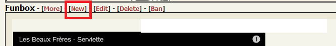
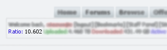

Welcome to TorViet.Com - D03
The goal is to provide the absolutely high quality stuff. Therefore, only specially authorised users have permission to upload torrents. If you have access to 0-day stuff do not hesitate to contact us!
This is a private tracker, and you have to register before you can get full access to the site. Before you do anything here at TorViet.Com, we suggest you read the rules! There are only a few rules to abide by, but we do enforce them!
Before you go any further you should read the TorViet.Com user agreement.
|
Contents
Thông tin về Tracker -
BQT dùng số tiền donate của member như thế nào?
Số tiền donate của member được BQT dùng để thuê server chạy tracker, hosting public forum và thuê coder coding các chức năng cần thiết.
Tôi được lợi gì khi donate?
Khi donate bạn sẽ được lượng HDP tương ứng, bạn có thể dùng HDP để nâng cấp thành account VIP hoặc đổi HDP sang upload.
Chi tiết.
Làm sao để có thể viết được Funbox?
Một chủ đề sẽ hết hạn trong vòng 24 giờ. Tuy nhiên, nếu chủ đề đó có 20 vote trở lên, và số vote "hài" của nó nhỏ hơn 20% thì cũng sẽ bị hết hạn. Sau khi một chủ đề bị hết hạn thì bạn sẽ được quyền đăng chủ đề mới.

Cách tính điểm thưởng của Funbox như thế nào?
Chủ đề nếu được các member khác vote cho "Hài hước" sẽ được thưởng như sau:
* Trên 25 votes, chỉ số hài đạt mức 50%. Member được 5 point.
* Trên 50 votes, chỉ số hài đạt mức 50%. Member được thêm 5 point.
* Trên 100 votes, chỉ số hài đạt mức 50%. Member được thêm 5 point.
* Trên 200 votes, chỉ số hài đạt mức 50%. Member được thêm 5 point.
* Trên 25 votes, chỉ số hài đạt mức 75%. Member được 10 point.
* Trên 50 votes, chỉ số hài đạt mức 75%. Member được thêm 10 point.
* Trên 100 votes, chỉ số hài đạt mức 75%. Member được thêm 10 point.
* Trên 200 votes, chỉ số hài đạt mức 75%. Member được thêm 10 point.
|
Thông tin về User -
Làm thế nào để đăng ký vào tracker?
Bạn cần có invite để có thể đăng ký vào tracker.
Tôi đã quên mất username\password của mình, làm sao tôi có thể vào lại tracker được?
Hãy dùng chức năng hồi phục này, thông tin đăng ký sẽ được gởi trả vào hộp mail của bạn.
Tôi có thể đổi tên account (hoặc email) của tôi được không?
Không và đừng hỏi chúng tôi điều này.
Ratio là gì?
Nó nằm ở góc trên bên trái

Ratio là tỉ lệ giữa lượng data đã upload và download của bạn Bạn có thể nhìn thấy ratio của mình ở phía trên góc trái màn hình, dưới tên account của bạn
Ratio được tính bằng cách lấy tổng số dung lượng đã upload chia cho tổng số dung lượng đã download. Nếu ratio của bạn >1, bạn là một thành viên nhiệt tình của tracker với tinh thần chia sẽ cao. Ngược lại bạn là một kẻ ăn bám của tracker.
Ngoài ra còn có 2 trường hợp đặc biệt: "Inf" và "---"
Inf tức là Infinity - nghĩa là bạn chưa download được gì cả, nhưng lại upload một lượng data lớn hơn 0;
"---" tức là "chưa có gì cả", - nghĩa là bạn vẫn chưa download hay upload một lượng data nào .
Tại sao địa chỉ IP của tôi lại xuất hiện trên trang thông tin cá nhân?
Đừng lo việc người khác sẽ nhìn thấy IP của bạn, những thông tin nhạy cảm như vậy chỉ có bạn và ban quản trị của tracker mới có thể thấy được mà thôi.
Tại sao tôi không kết nối được với tracker, port của tôi trong peer list có màu đỏ?
Tracker nhận thấy bạn đang nằm sau Firewall và NAT, và máy tính của bạn không thể nhận dữ liệu từ tracker một cách trực tiếp (hay nói cách khác, port của bạn đã bị khóa).
Điều đó nghĩa là các thành viên khác không thể kết nối được với bạn, chỉ có bạn kết nối được với họ mà thôi. Điều này gây ảnh hưởng đến tốc độ download và upload của bạn.
Để giải quyết vấn đề này bạn cần tắt Firewall hoặc mở port trong modem, chi tiết có thể xem tại đây: PortForward).
Tracker có bao nhiêu cấp user tất cả?
| Peasant |
|
Những thành viên bị giáng cấp. Phải cải thiện ratio trong vòng 14 ngày nếu không sẽ bị khóa tài khoản. Những thành viên này không thể viết bài ở mục FunBox, không thể upload phụ đề và post liên kết. |
| User |
|
Cấp mặc định cho những thành viên mới. Có thể upload torrents, funbox. |
| Power User |
|
Có thể xem file NFO, xem danh sách thành viên. |
| Elite User |
|
Có thể yêu cầu reseed. |
| Crazy User |
|
Có thể xem lịch sử torrent của các thành viên khác (nếu thành viên đó không chỉnh chế đô riêng tư ở mức cao). |
| Insane User |
|
Có thể xem lịch sử comment và post ở diễn đàn của các thành viên khác. |
| Veteran User |
|
Được cấp 1 invite mỗi tháng, không cộng dồn. |
| Extreme User |
|
Có thể upload subtitle. Được cấp 1 invite mỗi tháng, không cộng dồn. |
| Ultimate User |
|
Có thể ẩn danh khi seeding/leeching/uploading. Được cấp 2 invite mỗi tháng, không cộng dồn. |
| Master |
|
Được cấp 2 invite mỗi tháng, không cộng dồn. |
| VIP |
|
Những thành viên đã donate cho tracker. Có cùng chức năng như Master và được xem như thành viên cấp Elite. Không bị tính download. Có thể xem log của tracker. |
| Honor |
|
Những người có công với tracker, ví dụ Ex-staff/Encoder/Ripper/Subber... Có mọi quyền hạn như VIP. |
| Transporter |
|
Những thành viên có tốc độ upload cao. Có mọi quyền hạn như Honor và không bao giờ bị khóa tài khoản tự động. Có thể thấy được các thành viên ẩn danh. |
| Uploader |
|
Những thành viên thường xuyên upload lên tracker. Có mọi quyền hạn như Transporter. |
| Moderator |
|
Các thành viên trong BQT. Họ quản lý tất cả hành vi của members. Có thể xem box Staff và Report, quản lý Funbox và polls, chỉnh sửa và xóa bất cứ torrent nào, quản lý forum posts và comments của thành viên, xem được những logs nhạy cảm, xóa bất cứ phụ đề nào, xem lịch sử thư mời của thành viên, thay đổi thông tin chung của thành viên. |
| Administrator |
|
Quản trị của tracker, quản lý toàn bộ tracker. |
| SysOp |
|
Quản lý database. |
| Staff Leader |
|
Trùm. |
Làm thế nào để đạt được những cấp đó?
| Peasant |
|
Bạn sẽ bị giáng xuống cấp này nếu tải về hơn 50 GB và ratio dưới 0.4 |
| Power User |
|
Tham gia tracker hơn 4 tuần, download hơn 50GB và ratio lớn hơn 1,05. Bạn sẽ được tự động thăng cấp khi thỏa các điểm trên.
Lưu ý, hệ thống sẽ tự động giáng cấp nếu ratio của bạn thấp hơn 0,95 bất cứ khi nào. |
| Elite User |
|
Tham gia tracker hơn 8 tuần, download hơn 120GB và ratio lớn hơn 1,55. Bạn sẽ được tự động thăng cấp khi thỏa các điểm trên.
Lưu ý, hệ thống sẽ tự động giáng cấp nếu ratio của bạn thấp hơn 1,45 bất cứ khi nào. |
| Crazy User |
|
Tham gia tracker hơn 15 tuần, download hơn 300GB và ratio lớn hơn 2,05. Bạn sẽ được tự động thăng cấp khi thỏa các điểm trên.
Lưu ý, hệ thống sẽ tự động giáng cấp nếu ratio của bạn thấp hơn 1,95 bất cứ khi nào. |
| Insane User |
|
Tham gia tracker hơn 25 tuần, download hơn 500GB và ratio lớn hơn 2,55. Bạn sẽ được tự động thăng cấp khi thỏa các điểm trên.
Lưu ý, hệ thống sẽ tự động giáng cấp nếu ratio của bạn thấp hơn 2,45 bất cứ khi nào. |
| Veteran User |
|
Tham gia tracker hơn 40 tuần, download hơn 750GB và ratio lớn hơn 3,05. Bạn sẽ được tự động thăng cấp khi thỏa các điểm trên.
Lưu ý, hệ thống sẽ tự động giáng cấp nếu ratio của bạn thấp hơn 2,95 bất cứ khi nào. |
| Extreme User |
|
Tham gia tracker hơn 50 tuần, download hơn 1TB và ratio lớn hơn 3,55. Bạn sẽ được tự động thăng cấp khi thỏa các điểm trên.
Lưu ý, hệ thống sẽ tự động giáng cấp nếu ratio của bạn thấp hơn 3,45 bất cứ khi nào. |
| Ultimate User |
|
Tham gia tracker hơn 60 tuần, download hơn 1.5TB và ratio lớn hơn 4,05. Bạn sẽ được tự động thăng cấp khi thỏa các điểm trên.
Lưu ý, hệ thống sẽ tự động giáng cấp nếu ratio của bạn thấp hơn 3,95 bất cứ khi nào. |
| Master |
|
Tham gia tracker hơn 70 tuần, download hơn 2,5TB và ratio lớn hơn 4,55. Bạn sẽ được tự động thăng cấp khi thỏa các điểm trên.
Lưu ý, hệ thống sẽ tự động giáng cấp nếu ratio của bạn thấp hơn 4,45 bất cứ khi nào. |
| VIP |
|
Donate cho tracker, tham gia chương trình upgrade lên acc VIP. Chi tiết xem ở đây để biết thêm chi tiết. |
| Honor |
|
Những người có công với tracker sẽ được xét lên cấp bậc này. |
| Transporter - Uploader |
|
Bạn sẽ nhận lời đề nghị từ admin nếu họ thấy khả năng upload của bạn cao hơn so với các mem khác. |
| Moderator |
|
Bạn sẽ nhận lời đề nghị từ admin nếu họ thấy cần người quản lý thành viên, và bạn đáp ứng được yêu cầu của họ. |
Làm thế nào để thêm avatar vào profile của tôi ?
Trước tiên bạn phải có một tấm hình phù hợp với rules.
Kế tiếp bạn cần tìm một website nơi mà bạn có thể tải hình của mình lên, ví dụ Photobucket hoặc Imgur.
Bạn sẽ lấy địa chỉ URL được cung cấp từ website đó để post hình và địa chỉ này sẽ được đặt trên dòng Avatar thuộc phần your profile.
Vui lòng không post bài chỉ để thử avatar. Nếu bạn làm đúng thì avatar của bạn sẽ nằm ở phần personal page.
Tôi có trách nhiệm gì với người nhận invite từ tôi?
Hướng dẫn người mới cách sử dụng torrent. Người đưa invite chịu tất cả trách nhiệm nếu người nhận invite gây ra lỗi: public file torrent, cheat, up hàng cấm của tracker ra ngoài,...
Tại sao tôi không nhận được điểm thưởng khi seed torrent?
Những torrent thuộc category Misc, có size dưới 500MB sẽ không được tính điểm thưởng khi giữ seed.
Chức năng park account (nghỉ mát) kéo dài bao lâu?
Chúng tôi đã bỏ chức năng này. 6 tháng định kì tracker sẽ xóa tài khoản ngưng hoạt động 1 lần, đối tượng bị xóa tài khoản là những user ngưng hoạt động trên 6 tháng. Để tránh bị xóa tài khoản, bạn chỉ cần login.
Sau tên user có 1 biểu tượng, tôi có được không?
Được. Đây là chức năng huy chương của tracker. Bạn vào đây để lấy. Và đọc thêm ở đây.
|
Stats -
Những lí do thường gặp giải thích cho việc tại sao thông tin của bạn không được cập nhật
1) User là một cheater.
2) Server bị quá tải và không đáp ứng được request. Nếu có thể thì bạn không nên đóng session đó trước khi server có thể đáp ứng lại được cho bạn. Bạn cũng không refresh lại browser quá nhiều bởi điều này cũng sẽ làm quá tải server.
3) Bạn đang dùng một torrent-client không phải phiên bản ổn định. Nếu bạn vẫn muốn sử dụng phiên bản chưa ổn định của torrent-client thì bạn phải tự chịu trách nhiệm cho hành động đó!.
Những mẹo vặt hữu ích
1) Nếu torrent bạn đang seed/leech không hiển thị trên danh sách download của bạn thì hãy đợi một chút hoặc refresh browser lại.
2) Bạn phải chắc chắn rằng mình đã tắt torrent-client đúng cách và tracker đã nhận được thông điệp "event=completed".
3) Trong khi server đang down thì bạn không nên dừng lại việc seed/leech cho torrent. Ngay khi server khôi phục trở lại thì dung lượng upload/download của bạn sẽ được tự động cập nhật ngay.
Những torrent-client nào có thể được sử dụng trên tracker?
+ Chỉ có các client nằm trong danh sách cho phép dưới mới có thể leech/seed tại tracker. Các client không nằm trong danh sách sẽ không sử dụng được tại tracker.
Danh sách các torrent-client được cho phép tại tracker:
* Azureus: Từ bản 4.0 trở lên.
* BitTorrent: Từ bản 7.2.1 trở lên.
* Deluge: Từ bản 1.1.6 trở lên.
* KTorrent: Từ bản 4.0 trở lên.
* Libtorrent: Từ bản 0.12 trở lên.
* qBittorrent: Từ bản 3.1 trở lên.
* RTorrent: Từ bản 0.8 trở lên.
* Transmission: Transmission 1 từ bản 1.06 (build 5136) và Transmission 2 từ bản 2.03 trở lên.
* uTorrent: Từ bản 2.0 trở lên (chấp nhận các bản Beta).
* uTorrent MAC: Từ bản 1.6.0 trở lên (chấp nhận các bản Beta).
+ Nếu ra mắt phiên bản mới, bạn hãy chờ tracker cập nhật vào danh sách này trước khi tiến hành nâng cấp.
+ Những ai lên utorrent 2.0.3 mà thấy speed yếu thì vào Options/Preferences--->Bitorrent---> bỏ check "Enable Banwidth Management" rồi restart utorrent.
Tại sao torrent tôi đang download/upload lại xuất hiện cùng lúc nhiều lần trong profile của tôi?
Vì một lí do nào đó (ví dụ reboot máy đột ngột hoặc torrent-client bị lỗi) mà bạn không thể hoàn thành việc down/up torrent một cách hợp lí thì sau khi bạn refresh lại, torrent của bạn sẽ bị gắn thêm một "peer_id" mới, hay nói cách khác là torrent bạn đang upload/download được xem như một torrent mới (khác torrent cũ). Server sẽ không nhận được một thông điệp "event=completed" hoặc "event=stopped"message nào cả và đôi lúc nó sẽ hiện torrent bị lỗi đó trong list những torrent không hoạt động. Đừng bận tâm điều này vì sau một thời gian thì nó sẽ trở lại bình thường thôi.
Tôi đã kết thúc/ngưng một torrent. Vậy tại sao nó vẫn xuất hiện trong profile của tôi?
Một số torrent-clients, đặc biệt là TorrentStorm và Nova Torrent không gửi cho server thông điệp báo hoàn tất hoặc ngưng torrent. Đối với những trường hợp này thì tracker sẽ đợi một thông điệp từ client của bạn và tracker vẫn sẽ hiện torrent đó đang hoạt động (download/upload) trong một khoảng thời gian nhất định. Đừng bận tâm điều này vì sau một thời gian thì torrent lỗi đó sẽ biến mất khỏi danh sách những torrent đang hoạt động thôi.
Tôi có thể tham gia vào tracker từ nhiều địa chỉ IP hay từ nhiều máy tính khác nhau được không?
Được, tracker hỗ trợ nhiều sessions từ nhiều địa chỉ IP khác nhau cho một user. Torrent được gắn với user khi họ bắt đầu upload và chỉ tại thời điểm này thì địa chỉ IP của họ mới được xác định. Nói cách khác, nếu bạn muốn download/upload từ máy A và máy B sử dụng cùng một account thì bạn nên login vào tracker từ máy A, start torrent, và sau đó làm y như vậy trên máy B (số lượng hai máy chỉ là ví dụ, không giới hạn bạn sử dụng hơn hai máy, điều quan trọng ở đây là làm tất cả các bước như trên ở tất cả các máy). Bạn không cần phải re-login sau khi tắt torrent-client. Lưu ý: bạn không được phép dùng 2 IP để download cùng 1 torrent
|
Uploading -
Tại sao torrents tôi up lên tracker lại bị xóa?
Bạn nên đọc kỹ luật upload tại đây.
Tôi cần phải thỏa điều kiện gì để được xét lên cấp Uploader?
Staff sẽ dựa vào lượng torrent bạn up và speed của bạn để xét lên cấp Uploader.
Tôi có thể mang những files torrents sang những tracker khác được không?
Không. Chỉ những user đã đăng ký mới có quyền download những torrents từ tracker. Do đó nếu bạn chỉ copy files torrents thì những user khác cũng không thể download được dữ liệu từ tracker. Để không gây khó khăn cho bạn cũng như ảnh hưởng đến tracker, chúng tôi yêu cầu những user đã đăng ký chỉ sử dụng torrent files trên tracker. Tuy nhiên bạn vẫn có thể sử dụng dữ liệu đã download được từ tracker cho mục đích khác.
Muốn upload torrent lên tracker, tôi phải làm sao?
Updating...
|
Downloading -
Tôi sử dụng những tập tin đã tải về như thế nào?
Bạn hãy đọc kỹ hướng dẫn này.
Tôi đã tải phim về, nhưng không biết các khái niệm CAM/TS/TC/SCR nghĩa là gì?
Đọc kỹ hướng dẫn này.
Tại sao torrent vừa mới hoạt động thì lại biến mất đột ngột??!
Có vài lí do sau đây:
1) Torrent không phù hợp với rules.
2) Uploader đã xóa nó vì bản up lên là bản scene (chất lượng không tốt). Có khả năng bản này sẽ được thay thế bằng bản internal (chất lượng tốt).
Làm thế nào tôi có thể tiếp tục tải về các torrent đã tạm ngưng hoặc reseed các torrent đã có?
Mở tập tin torrent lên. Khi chương trình torrent hỏi đường dẫn truy xuất, chọn đường dẫn đến nơi mà bạn chứa các tập tin đã tồn tại, sau đó chương trình sẽ tự động recheck và tiếp tục tải về hoặc reseed.
Tại sao dữ liệu tôi download đôi khi dừng lại tại 99%?
Bạn đã download được phần lớn dữ liệu và torrent-client đang cố tìm những users có phần dữ liệu cuối cùng mà bạn thiếu hoặc bị lỗi. Việc download sẽ tạm dừng khi chỉ còn vài phần trăm là hoàn thành. Vui lòng chờ một chút và bạn sẽ download được 100% dữ liệu mình muốn. Vấn đề này thường gặp do bạn sử dụng sai torrent-client, hãy dùng uTorrent hoặc Azureus để cho kết quả tốt nhất.
Thông điệp "a piece has failed an hash check" nghĩa là gì?
Torrent-client đang kiểm tra dữ liệu download bị lỗi. Nếu một phần nào đó của dữ liệu bạn download về bị lỗi thì torrent-client sẽ tự động download lại phần đó cho đến khi hết lỗi thì thôi. Việc xảy ra lỗi dạng này cũng rất bình thường cho nên bạn đừng quá bận tâm về nó. Một số torrent-client có tùy chọn cho phép bạn block những user thường hay gửi những phần dữ liệu bị lỗi.
Kích thước của torrent là 100MB. Vậy sao dữ liệu tôi đã download tới 120MB?
Hãy để ý đến câu hỏi bên trên. Nếu torrent-client nhận được những phần dữ liệu bị lỗi thì nó sẽ tự đông download lại cho đến khi hết lỗi. Bởi vậy tổng dung lượng bạn đã download sẽ có khả năng lớn hơn dung lượng gốc của dữ liệu.
Tại sao tôi bị lỗi "rejected by tracker - Port xxxx is blacklisted"?
Torrent-client của bạn phải sử dụng port thuộc phạm vị mặc định cho giao thức BitTorrent (6881-6889) hoặc những port dùng mặc định cho các chương trình P2P.
Tracker không cho phép bạn sử dụng những port chuẩn của các giao thức trao đổi dữ liệu khác. Lí do là vì nhiều nhà cung cấp dịch vụ thường đóng các port này lại khiến cho tốc độ trao đổi dữ liệu trên tracker giảm xuống rất nhiều.
Những port có thể bị block được liệt kê trong danh sách bên dưới, tuy nhiên chúng tôi cũng không đảm bảo nhà cung cấp dịch vụ của bạn chỉ block những port này (họ có thể block thêm nhiều port khác):
411-413 (Direct Connect),
1214 (Kazaa),
4662 (eDonkey),
6346-6347 (Gnutella),
6881-6889 (BitTorrent).
Để truy cập vào tracker thì bạn cần chỉnh torrent-client của bạn sử dụng những port khác những port trên (tốt hơn hết là trong khoảng 49152-65535). Lưu ý một số client như Azureus sử dụng một port cho tất cả các torrent trong khi một số client lại sử dụng những port khác nhau cho những torrent khác nhau. Những port này đóng vai trò quan trọng trong việc kết nối giữa các user chứ không phải giữa client và server! Thay đổi port trong nhiều trường hợp sẽ làm tăng tốc độ giữa các user với nhau. Bạn cũng đừng hỏi người khác rằng mình sẽ sử dụng port nào nhé, cứ lấy port càng cao thì càng ít bị nhà cung cấp dịch vụ phát hiện (họ sẽ không đóng port của bạn).
"IOError - [Errno13] Permission denied" là gì?
Để giải quyết vấn đề này thì bạn cần refresh lại máy tính. Chi tiết lỗi như sau: IOError là một lỗi vào-ra dữ liệu và lỗi này là do máy tính của bạn, không phải do tracker. Lỗi này xảy ra khi torrent-client không thể mở files đã download vì một lí do nào đó. Lí do thường gặp nhất là khi có 2 torrent-client làm việc cùng lúc. Ví dụ bạn đang cố tắt torrent-client A nhưng không tắt được. Đợi lâu quá nên bạn mở luôn cũng torrent-client đó lần thứ hai và bạn sẽ bị lỗi như trên. Nói cách khác là lần chạy torrent-client đầu tiên đã block những files đang còn chạy dang dở. Ít gặp hơn là những trường hợp lỗi trong bảng hệ thống file (FAT hoặc FAT32). Những file đã download sẽ bị lỗi khi đọc hoặc chúng hỏng hết chẳng đọc được gì cả. Bạn nên dùng hệ thống file NTFS để có kết quả tốt nhất.
Tại sao tôi bị báo lỗi "Your slot limit is reached! You may at most download xx torrents at the same time" ?
Lỗi này là do "Hệ thống Slot". Nó được sử dụng để giới hạn số download cùng lúc của các thành viên có ratio thấp và download hơn 10 GB
Nguyên tắc:
| Ratio dưới |
0.5 |
|
đươc down 1 lúc |
1 |
| Ratio dưới |
0.65 |
|
đươc down 1 lúc |
2 |
| Ratio dưới |
0.8 |
|
đươc down 1 lúc |
3 |
| Ratio dưới |
0.95 |
|
đươc down 1 lúc |
4 |
| Ratio trên |
0.95 |
|
đươc down 1 lúc |
không giới hạn |
Passkey là gì? Nó hoạt động như thế nào?
Passkey là một dạng mã đặc biệt dùng để phân biệt các thành viên trong tracker. Mỗi thành viên sẽ có 1 passkey riêng, và dựa vào đó hệ thống có thể nhận biết thành viên đó đang thao tác gì trên tracker (seed/leech).
Tại sao tôi lại nhận được thông báo "Unknown Passkey"?
Lý do thứ nhất có thể do bạn chưa phải là thành viên trên tracker hoặc tập tin torrent mà bạn tải về không phải là tải từ tracker. Trong trường hợp này bạn cần phải đăng nhập lại và tải lại tập tin torrent.Trường hợp thứ hai có thể do bạn đã thay đổi passkey trên tracker, nhưng bạn chưa thay đổi passkey trong tập tin torrent bạn đang tải. Bạn cần thay đổi passkey ở cả 2 phía; tracker và tập tin torrent. Nếu bạn đã thay đổi passkey rồi mà vẫn bị báo lổi, thì hãy làm thao tác update tracker.
Khi nào thì tôi nên thay đổi passkey?
Trong trường hợp passkey của bạn bị tiết lộ và các thành viên khác lạm dụng để tải torrents với tài khoản của bạn. Trong trường hợp này, bạn sẽ thấy những torrent mà bạn không tham gia seed/leech xuất hiện trong profile của bạn.
DHT là gì? Tại sao tôi phải tắt nó và làm như thế nào?
DHT phải được tắt trong torrent client. Nó khiến cho những thông tin của bạn bị chuyển đi sai lệch và có thể bị xem như gian lận. Bất cứ thành viên nào bật DHT lên sẽ bị hệ thống ghi nhận như là hành vi gian lận và có thể bị khóa tài khoản.
Tại sao chương trình client của tôi thông báo hết dung lượng ổ cứng, trong khi thực tế vẫn còn?
Nhiều khả năng ổ đĩa của bạn được format theo định dạng FAT32, đồng nghĩa với việc giới hạn dung lượng file không được quá 4 GB. Nếu bạn đang xài Windows, hãy chuyển đổi định dạng thành NTFS. Nhấp vào đây để biết thêm chi tiết.
Tại sao có một số torrent tôi không được quyền download?
Có một số torrent đặc biệt được set quyền download. Chỉ những user nào đạt điều kiện yêu cầu về cấp độ thì mới có thể download được. Chi tiết như sau:
* Torrent Blu-ray Remux của BDViet: Yêu cầu cấp độ Insane User trở lên mới download được.
* Torrent có thuyết minh tiếng việt: Yêu cầu cấp độ Elite User trở lên mới download được.
Các hình ảnh 50%, 30%, Free, x2 ở cuối mỗi torrent có ý nghĩa gì?
Đấy là trạng thái của torrent, cụ thể:
- Torrent có  |
|
Download tính 50%, upload tính 100%. |
| - Torrent có |
|
Download tính 30%, upload tính 100%. |
| - Torrent có |
|
Download tính 0%, upload tính 100%. |
| - Torrent có |
|
Download tính 100%, upload nhân 2. |
| - Torrent có |
|
Download tính 0%, upload nhân 2. |
| - Torrent có |
|
Download tính 50%, upload nhân 2. |
Việc xét trạng thái torrent là do các staff xét duyệt dựa trên quy định của tracker.
|
Làm thế nào để tăng tốc độ download của torrent? -
Đừng cố download những torrent mới ngay khi chúng vừa được upload, đặc biệt trong trường hợp bạn có tốc độ thấp.
Hãy để những user có tốc độ cao download dữ liệu trước, những người này sẽ đảm bảo cho bạn tốc độ download cực nhanh và không bị hạn chế băng thông. Thời điểm thích hợp nhất để nhảy vào download torrent là khi torrent đó đã được những người khác download gần phân nửa (1/2). Tốc độ seeding của bạn cũng sẽ bị ảnh hưởng do đã có nhiều người download hết torrent. Nhiệm vụ của bạn là phải làm sao cân bằng giữa 2 yếu tố seed/leech :)
Giảm bớt tốc độ upload.
Hầu hết những torrent-client đều có sự điều chỉnh để cân bằng lượng dữ liệu trao đổi giữa các user. Có những thời điểm tốc độ upload bằng với tốc độ download. Ví dụ nếu user A và B đang download cùng một file và A đang gửi cho B dữ liệu của file đó với tốc độ cao thì B cũng sẽ cố gắng gửi lại cho A cùng tốc độ đó. Bởi vậy nếu tốc độ upload cao sẽ dẫn đến tốc độ download cao.
Quá trình trao đổi giữa các torrent-client A và B được thực hiện bởi hệ thống ACKs (một trong những loại thông điệp "received!").
Nếu một torrent-client nào đó không thể nhận được dữ liệu thì những user khác sẽ tạm dừng upload. Điều này sẽ làm cho tốc độ downloading và uploading giảm xuống. Để ngăn chặn những tình huống như vậy thì cần có sự cân bằng giữa downloading và uploading torrents.
Giải pháp thông dụng nhất là giới hạn lại tốc độ upload trong khoảng 80% tốc độ lí thuyết. Một số clients (ví dụ Azureus) có thể giới hạn lại tốc độ chung cho bạn hoặc một số khác sẽ cho phép bạn giới hạn trên từng torrent cụ thể. Luôn nhớ rằng một phần băng thông của bạn sẽ bị sử dụng bởi những chương trình cần truy cập Internet (web, mail...).
Giảm bớt số connections trong torrent client.
Một số hệ thống (như Windows 9x) có một lượng lớn các kết nối đồng thời không hiệu quả và thậm chí có thể gây treo chương trình. Một số routers (đặc biệt khi NAT/firewall đang làm việc trong chế độ scanning) cũng có thể làm chậm tốc độ kết nối và gây treo. Trong trường hợp này thì không có giải pháp tổng thể, do vậy buộc bạn phải chọn số lượng kết nối tối ưu cho từng trường hợp (chúng tôi đề nghị các giá trị từ 60-100). Bạn cũng nên lưu ý chỉnh sao cho phù hợp với tất cả những chương trình còn lại đang hoạt động trên máy tính của mình.
Giảm bớt số kết nối upload.
Giới hạn lại lượng upload đồng thời nghĩa là giảm xuống lượng dữ liệu mà bạn upload lên. Sử dụng nhiều torrent để upload không đồng nghĩa với việc tăng tính hiệu quả trong việc upload. Trong những trường hợp xấu thì điều này sẽ giảm tốc độ upload của bạn vì những torrent không hoạt động (nhưng vẫn đang trong chế độ seeding) sẽ "đụng" với những torrent đang hoạt động. Giá trị tối ưu cho tham số này được tính dựa vào tốc độ kết nối trực tiếp so với tốc độ kết nối vậy lý đường truyền của bạn và tùy theo từng trường hợp cụ thể.
Just give it some time
As explained above peers favour other peers that upload to them. When you start leeching a new torrent you have nothing to offer to other peers and they will tend to ignore you. This makes the starts slow, in particular if, by chance, the peers you are connected to include few or no seeders. The download speed should increase as soon as you have some pieces to share.
Tại sao tôi duyệt web rất chậm khi đang download?
Kết nối Internet của bạn có tốc độ nhất định phụ thuộc vào kết nối vật lý và gói Net bạn đăng ký với ISP. Do đó nếu bạn download torrent với tốc độ cao thì sẽ làm giảm tốc độ của các chương trình khác như web, email... Để giải quyết tình trạng chậm các ứng dụng Net khác thì bạn phải giảm xuống tốc độ download chung trong torrent-client (hoặc giảm trên từng torrent cụ thể).
|
Proxy servers. Làm việc với tracker thông qua proxy server. -
Proxy server là gì?
Đây là một server trung gian và bạn sẽ kết nối ra Internet thông qua nó. Proxy server được chia thành 2 loại: clear và anonymous. Sự khác nhau giữa 2 loại này là "clear proxy" sẽ hiện địa chỉ IP của bạn khi truy cập website trên Internet, trong khi "anonymous proxy" thì sẽ ẩn đi địa chỉ IP của bạn. Thông tin cho biết bạn có sử dụng proxy hay không nằm trong field HTTP_X_FORWARDED_FOR thuộc heading chuẩn của một HTTP-request.
Làm thế nào để tôi biết là đang sử dụng proxy hay không?
Hãy vào website ProxyJudge. Đợi một chút bạn sẽ nhận được một HTTP heading trả về. Những tham số quan trọng nhất trong heading này là REMOTE_ADDR, HTTP_VIA và HTTP_X_FORWARDED_FOR. Chúng sẽ cho bạn biết chính xác hiện bạn có đang sử dụng proxy hay không, địa chỉ IP thật của bạn và địa chỉ IP của proxy bạn kết nối đến (không phải luôn đúng đối với anonymous proxy server)..
Tại sao có thông báo không thể kết nối dù tôi không sử dụng NAT hoặc firewall?
Tracker của chúng tôi đủ khả năng để phát hiện ra địa chỉ IP thật của bạn. Nếu bạn đang dùng một proxy thì tracker sẽ yêu cầu proxy đó phải luôn gửi HTTP_X_FORWARDED_FOR trong phần heading trả lại cho tracker. Nếu proxy bạn đang dùng không làm được điều đó thì tracker sẽ gửi request tới proxy server để kiểm tra xem bạn có đang sử dụng NAT hay không. Tracker luôn nghĩ rằng địa chỉ IP mà nó có là của chính bạn. Dĩ nhiên proxy server sẽ không thể xử lý request từ tracker nên tracker sẽ cho rằng bạn đang sử dụng NAT hoặc firewall và ngắt kết nối của bạn.
|
Tôi không thể vào tracker được nữa, account của tôi đã bị block. -
Maybe my address is blacklisted?
The site keeps a list of blocked IP addresses for banned users or attackers. This works at Apache/PHP level, and only blocks logins from those addresses. It should not stop you from reaching the site. In particular it does not block lower level protocols, you should be able to ping/traceroute the server even if your address is blacklisted. If you cannot then the reason for the problem lies elsewhere.
If somehow your address is blocked by mistake, contact us about it.
Your ISP blocks the site's address
(In first place, it's unlikely your ISP is doing so. DNS name resolution and/or network problems are the usual culprits.)
There's nothing we can do. You should contact your ISP (or get a new one). Note that you can still visit the site via a proxy, follow the instructions in the relevant section. In this case it doesn't matter if the proxy is anonymous or not, or which port it listens to.
Notice that you will always be listed as an "unconnectable" client because the tracker will be unable to check that you're capable of accepting incoming connections.
|
What if I can't find the answer to my problem here? -
You may try this
Post in the Forums, by all means. You'll find they are usually a friendly and helpful place, provided you follow a few basic guidelines:
- Make sure your problem is not really in this FAQ. There's no point in posting just to be sent back here.
- Before posting read the sticky topics (the ones at the top). Many times new information that still hasn't been incorporated in the FAQ can be found there.
- Help us in helping you. Do not just say "it doesn't work!". Provide details so that we don't have to guess or waste time asking. What client do you use? What's your OS? What's your network setup? What's the exact error message you get, if any? What are the torrents you are having problems with? The more you tell the easiest it will be for us, and the more probable your post will get a reply.
- And needless to say: be polite. Demanding help rarely works, asking for it usually does the trick.
|
|
|